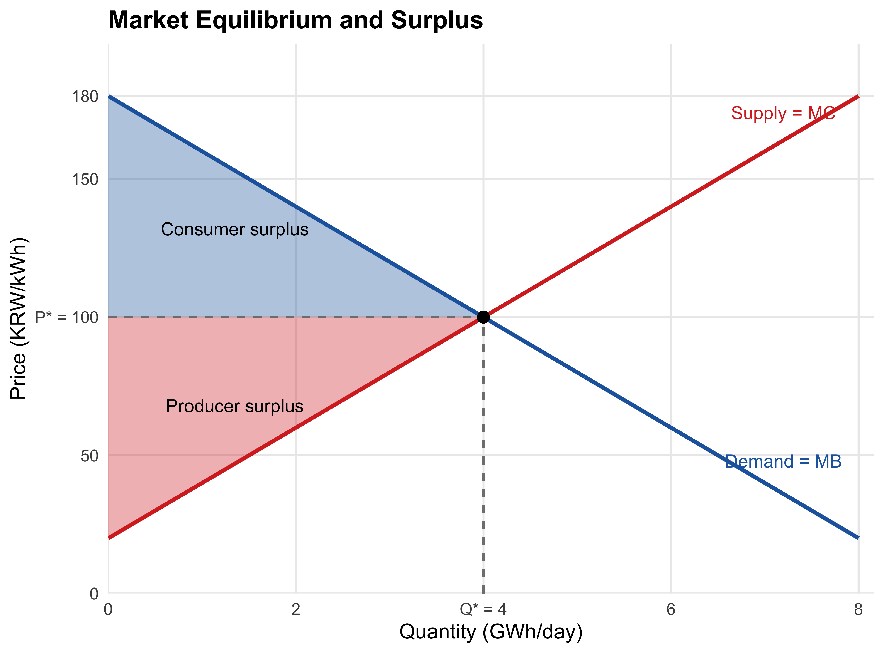
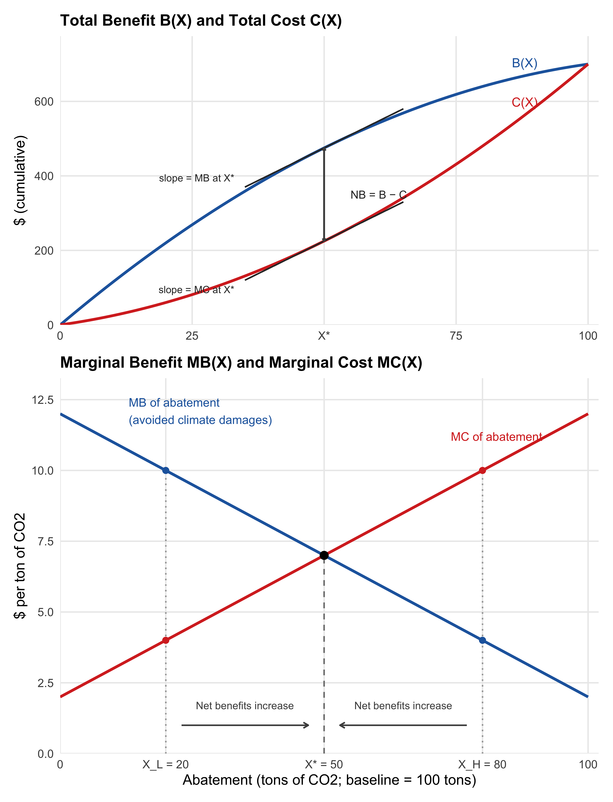

시장의 효율성
시장은 어떻게 작동하는가
시장실패를 이야기하기 전에, 먼저 시장이 무엇이며 어떻게 작동하는지부터 정확히 해두자. 시장(market)이란 구매자와 판매자가 교환을 통해 재화의 배분을 결정하는 탈중앙화된(decentralized) 제도다 (Keohane and Olmstead 2016). 여기서 ’탈중앙화’가 핵심이다. 누가 얼마나 생산하고 누가 얼마나 소비할지를 지시하는 중앙 계획자는 없다. 수많은 개인과 기업이 각자 자신의 이익을 좇아 내리는 결정들이 가격이라는 신호를 통해 조율될 뿐이다. 놀라운 것은, 뒤에서 보듯 일정한 조건이 갖춰지면 이 무질서해 보이는 과정이 사회 전체에 바람직한 결과를 만들어낸다는 사실이다.
수요곡선: 한계편익을 읽는 창
시장의 구매자 쪽 행동을 요약한 것이 수요곡선(demand curve)이다. 가격이 내려가면 수요량이 늘어난다는 우하향 관계는 익숙할 것이다. 그러나 이 책 전체를 위해 더 중요한 것은 수요곡선을 읽는 또 하나의 방법이다. 수량을 고정하고 수요곡선의 높이를 읽으면, 그것은 소비자가 그 재화 한 단위를 더 얻기 위해 지불할 용의가 있는 최대 금액—한계지불의사(marginal willingness to pay, MWTP)—이다. 어떤 재화에 돈을 지불할 용의가 있다는 것은 그만큼의 편익을 얻는다는 뜻이므로, 수요곡선의 높이는 곧 소비의 한계편익(marginal benefit, MB)을 나타낸다.
여기서 “지불의사”라는 말의 정확한 의미를 짚어두자. 어떤 재화에 대한 지불의사란, 그 금액을 내고 재화를 얻는 것과 돈을 그대로 쥔 채 다른 데 쓰는 것 사이에 무차별한(indifferent) 최대 금액이다. 지불의사만큼 지불한다면 사든 안 사든 나을 것이 없다—순편익이 정확히 0이라는 뜻이다. 이 정의가 왜 중요한지, 구체적인 예로 확인해보자. 이 장 전체가 결국 기후변화로 이어지므로, 예 역시 전력 시장에서 가져온다.
한여름 밤, 무더위에 잠 못 이루는 민준을 생각해보자. 에어컨을 29도로 켜는 것만으로는 성에 차지 않아, 설정온도를 한 단계씩 낮추려 한다. 29도에서 28도로 낮추는 첫 단계는 찜통 같은 방 안의 열기를 몰아내 주므로 민준은 이를 위해 5,000원까지 낼 용의가 있다. 28도에서 27도로 낮추는 두 번째 단계에는 이미 방이 어느 정도 시원해졌으니 2,500원까지만 낼 용의가 있다. 27도에서 26도로 낮추는 세 번째 단계부터는 쾌적함이 크게 달라지지 않아 1,000원, 26도에서 25도로 낮추는 네 번째 단계는 오히려 이불을 찾을 만큼 쌀쌀해질 수 있어 300원까지만 낼 용의가 있다고 하자. 여기서 한 단계 더 낮춘다면 어떻게 될까? 민준은 추위에 시달리게 되므로, 오히려 돈을 받아야 견딜 만한 수준—음(-)의 한계편익—에 이를 것이다.
| 냉방 강도 단계 | 설정온도 | 한계지불의사(MWTP) | 전기요금이 단계당 1,500원일 때 사용 여부 |
|---|---|---|---|
| 1단계 | 29→28도 | 5,000원 | 사용 (순편익 +3,500원) |
| 2단계 | 28→27도 | 2,500원 | 사용 (순편익 +1,000원) |
| 3단계 | 27→26도 | 1,000원 | 사용 안 함 (순편익 −500원) |
| 4단계 | 26→25도 | 300원 | 사용 안 함 (순편익 −1,200원) |
전기요금이 단계당 1,500원이라면 민준은 27도까지, 즉 두 단계만 낮추는 것이 합리적이다. 세 번째 단계는 얻는 편익(1,000원어치)이 치러야 할 요금(1,500원)보다 작으므로, 낮추는 순간 오히려 손해다. 요점은 “지불의사가 가장 큰 것을 고르라”가 아니라 “지불의사가 가격을 웃도는 한 계속 소비하라”는 것이다—비싸더라도 가장 값진 것을 고르면 된다는 생각은 함정이다. 언제나 가치(지불의사)에서 비용(가격)을 뺀 순편익을 기준으로 판단해야 한다.
민준 한 사람의 지불의사는 강도를 높일수록(온도를 낮출수록) 계단식으로 떨어진다(이를 한계효용 체감(diminishing marginal utility)이라 부른다). 이제 민준과 비슷하지만 저마다 다른 지불의사 스케줄을 가진 수많은 가정과 사업장을 한데 모으면 어떻게 될까? 폭염 속 병원의 냉방처럼 지불의사가 아주 높은 수요자도 있고, 요금이 조금만 올라도 설정온도를 도로 높이는 수요자도 있다. 가격이 오를 때마다 지불의사가 그 가격에 못 미치는 수요자들이 하나둘 강도를 낮추므로, 수많은 개인의 계단식 지불의사를 모두 합하면 매끄럽게 우하향하는 시장수요곡선(market demand curve)이 만들어진다—실제로 냉방 설정온도를 1도 낮출 때마다 전력 소비가 약 7% 늘어난다는 사실은, 이 개인 수준의 체감 편익과 실제 전력 사용량 사이의 관계를 보여준다.
공급곡선: 한계비용을 읽는 창
공급 쪽도 같은 방식으로 읽을 수 있다. 공급곡선(supply curve)의 높이는 생산자가 그 재화 한 단위를 더 생산하기 위해 받아야 하는 최소 금액이다. 이윤을 추구하는 기업은 가격이 추가 생산의 비용보다 높은 한 생산을 늘리고, 낮아지면 줄인다. 따라서 기업은 가격이 한계비용(marginal cost, MC)—한 단위 더 생산하는 데 드는 비용—과 같아지는 지점까지 생산하며, 공급곡선은 곧 산업의 한계비용곡선을 따라 그려진다.
이번에는 공급 쪽에서 같은 논리를 따라가 보자. 전력회사가 여름날 늘어나는 수요에 맞추어 발전량을 추가하는 상황을 생각해보자. 이미 가동 중인 원자력·석탄 발전소(기저부하)로 만드는 첫 1kWh는 추가 연료비가 거의 들지 않아 40원만 받아도 팔 용의가 있다. 수요가 더 늘면 액화천연가스(LNG) 복합화력 발전소를 추가로 돌려야 하는데, 연료비가 더 비싸 90원은 받아야 한다. 그래도 부족하면 노후 석유화력 발전소까지 가동해야 해서 150원, 폭염 정점의 최고 수요를 감당하려면 가동 비용이 가장 비싼 피크용 가스터빈(peaker plant)까지 돌려야 해서 250원은 받아야 채산이 맞는다.
| 추가 발전량 | 한계비용(MC) | 도매가격이 kWh당 100원일 때 공급 여부 |
|---|---|---|
| 1블록째 (원자력·석탄) | 40원 | 공급 (순이익 +60원) |
| 2블록째 (LNG 복합화력) | 90원 | 공급 (순이익 +10원) |
| 3블록째 (노후 석유화력) | 150원 | 공급 안 함 (순손실 −50원) |
| 4블록째 (피크용 가스터빈) | 250원 | 공급 안 함 (순손실 −150원) |
전력회사에게도 원칙은 같다: 한계비용이 가격보다 낮은 한 발전할수록 이득이므로 계속 가동하고, 한계비용이 가격을 넘어서는 순간 멈춘다. 이윤을 추구하는 발전 사업자는 결국 가격과 한계비용이 같아지는 지점까지—더도 말고 딱 그만큼만—발전한다. 이렇게 저렴한 발전원부터 순서대로 투입하는 방식을 전력 산업에서는 급전순위(merit order)라 부르는데, 바로 이 순서 때문에 시장공급곡선은 매끄럽게 우상향한다.
이렇게 보면 수요곡선과 공급곡선은 결국 같은 이야기의 양면이다: 소비자든 생산자든, 한 단위를 더 사거나 팔았을 때의 편익과 비용을 비교하여 “그럴 가치가 있는 한” 거래를 계속한다는 것이다. 그런데 이 전력 시장의 예는 단순한 예시 이상의 의미가 있다. 위 공급곡선의 한계비용에는 원자력·석탄·LNG를 태울 때 대기로 방출되는 온실가스의 사회적 비용이 전혀 들어 있지 않다—발전회사는 오직 연료비와 설비 가동비만 고려할 뿐이다. 이 빠진 비용이 4장에서 다룰 외부효과(externality)이며, 스턴 보고서가 기후변화를 “역사상 가장 큰 시장실패”라 부른 이유이기도 하다. 하지만 그 이야기를 하기 전에, 먼저 외부효과 없이 시장이 “제대로” 작동할 때 무엇을 달성하는지—다음 절에서 볼 시장균형과 잉여—를 분명히 해두어야 한다.
시장균형
수요와 공급이 만나면 무슨 일이 일어나는가? 가격이 너무 높으면 팔려는 양이 사려는 양을 초과하고(초과공급), 재고가 쌓인 판매자들이 가격을 내리며 경쟁한다. 가격이 너무 낮으면 사려는 양이 팔려는 양을 초과하고(초과수요), 가격은 위로 밀려 올라간다. 이 조정은 수요량과 공급량이 정확히 일치하는 시장균형(market equilibrium)에서 멈춘다.
구체적인 예로 앞서 다룬 전력 시장을 이어가 보자. 하루 단위로 집계한 시장 전체의 수요와 공급이 다음과 같다고 하자. 가격 \(P\)의 단위는 원/kWh, 수량 \(Q\)의 단위는 하루 GWh(기가와트시)다.
\[\text{수요: } P = 180 - 20Q, \qquad \text{공급: } P = 20 + 20Q\]
두 식을 연립하면 균형 수량은 \(Q^* = 4\)(하루 4GWh), 균형 가격은 \(P^* = 100\)(kWh당 100원)이다. 이 가격에서 전력을 사려는 사람은 모두 사고, 팔려는 사람은 모두 판다. 시장이 “청산(clear)”된 것이다.
시장균형은 무엇을 극대화하는가: 잉여와 순편익
시장균형이 존재한다는 것과 그것이 바람직하다는 것은 별개의 문제다. 시장균형의 성적을 매기려면 측정 도구가 필요한데, 그것이 잉여(surplus)다.
Tip잉여의 정의
소비자잉여(Consumer Surplus, CS): 소비자가 지불할 용의가 있는 금액(수요곡선)과 실제 지불 금액(시장가격) 사이의 차이. 소비자가 거래에서 얻는 순이익이다.
생산자잉여(Producer Surplus, PS): 시장가격과 생산의 한계비용(공급곡선) 사이의 차이. 생산자가 거래에서 얻는 순이익이다.
총잉여(Total Surplus): CS + PS. 사회 전체의 순이익이며, 이를 극대화하는 것이 효율적 배분이다.
직관은 간단하다. 앞서 본 민준을 다시 떠올려보자. 그는 냉방 강도를 29도에서 28도로 낮추는 첫 단계에 5,000원까지 낼 용의가 있었지만, 실제로 낸 요금은 단계당 1,500원뿐이었다. 그는 3,500원어치의 ’남는 장사’를 한 것이다. 이 남는 몫을 시장의 모든 거래에 대해 더한 것이 소비자잉여다. 전력 시장 전체에서도 마찬가지다—가장 먼저 전력을 확보하려는 수요자의 지불의사는 kWh당 180원에 가깝지만 실제로는 100원만 내면 되므로, 초기 수요자들일수록 큰 잉여를 얻는다. Figure 4.1 에서 소비자잉여는 수요곡선 아래, 가격선 위의 삼각형이다: \(\text{CS} = \tfrac{1}{2}\times(180-100)\times 4 = 160\), 즉 하루 1억 6천만 원이다. 마찬가지로 생산자잉여는 가격선 아래, 공급곡선 위의 삼각형으로 역시 하루 1억 6천만 원이다. 총잉여는 하루 3억 2천만 원. 이것이 이 시장이 매일 만들어내는 사회적 순이익의 크기다.
왜 균형에서 총잉여가 극대화되는가: 등한계 원칙
시장균형의 결정적 성질은, 바로 그 균형 수량에서 총잉여가 극대화된다는 점이다. 이유를 보려면 균형이 아닌 수량을 상상해 보면 된다. 거래량이 \(Q^*\)보다 적다면, 그 지점에서 수요곡선의 높이(누군가 추가 1kWh에 지불할 용의)가 공급곡선의 높이(그 1kWh를 공급하는 비용)보다 높다. 즉 편익이 비용을 웃도는 거래가 아직 남아 있는데도 실현되지 않고 있는 것이다. 반대로 거래량이 \(Q^*\)를 넘어서면, 마지막 몇 kWh는 공급하는 비용이 그로부터 얻는 편익보다 큰—사회 전체로 보면 손해인—거래다.
말로는 이해되지만, 숫자로 직접 확인하면 훨씬 선명해진다. 앞서의 전력 시장 예제(수요: \(P = 180 - 20Q\), 공급: \(P = 20 + 20Q\))에서, 거래량을 한 단위씩 늘려갈 때마다 그 ’마지막 1단위’가 총잉여에 얼마나 기여하는지—즉 그 단위의 한계편익에서 한계비용을 뺀 값—를 따라가 보자.
| 거래량 \(Q\) (GWh) | 한계편익 MB | 한계비용 MC | 그 단위의 순편익 기여(MB − MC) | 총잉여에 대한 함의 |
|---|---|---|---|---|
| 1 | 160원 | 40원 | +120원 | 이 단위는 이득 — 거래를 늘려야 함 |
| 2 | 140원 | 60원 | +80원 | 이 단위는 이득 — 거래를 늘려야 함 |
| 3 | 120원 | 80원 | +40원 | 이 단위는 이득 — 거래를 늘려야 함 |
| 4 | 100원 | 100원 | 0원 | 균형 \(Q^*\) — 더는 개선 여지 없음 |
| 5 | 80원 | 120원 | −40원 | 이 단위는 손해 — 거래를 줄여야 함 |
| 6 | 60원 | 140원 | −80원 | 이 단위는 손해 — 거래를 줄여야 함 |
논리가 표에 그대로 드러난다. \(Q=1\)에서 \(Q=3\)까지는 한 단위 더 거래할 때마다 순편익 기여가 여전히 양(+)이므로, 그 단위를 더 거래할수록 총잉여는 계속 불어난다—비유하자면 “언덕을 오르는” 구간이다. \(Q=5,6\)에서는 반대로 순편익 기여가 음(−)이어서, 거래를 늘릴수록 오히려 총잉여가 깎여 나간다—“언덕을 내려가는” 구간이다. 이 둘 사이, 정확히 \(Q^*=4\)에서만 한계편익과 한계비용이 같아져 순편익 기여가 0이 된다. 총잉여라는 언덕의 정상이 바로 여기다. Figure 4.1 의 색칠된 두 삼각형은 사실 이 표에서 \(Q=1,2,3\)의 양(+)의 순편익 기여들을(수량을 잘게 쪼개 연속적으로) 모두 합한 것과 같다.
일반화하면 다음과 같다: 수량을 무한히 잘게 나눌 때, 총잉여는 정확히 한계편익과 한계비용이 일치하는 지점(\(\text{MB} = \text{MC}\))에서 극대화되며, 경쟁시장의 균형이 정확히 그 지점을 달성한다. 이 조건—“각 단위의 한계편익과 한계비용이 같아지는 곳에서 총순편익이 극대화된다”—을 등한계 원칙(equimarginal principle)이라 부른다. 이 원칙은 이 책에서 가장 자주 재등장할 도구다. 뒤에서 보겠지만 “온실가스를 얼마나 감축해야 하는가”라는 이 책의 핵심 질문도, 결국 감축의 한계편익과 한계비용을 일치시키는 문제로 귀결된다.
여기서 용어 하나를 정리해 두자. 총편익에서 총비용을 뺀 것을 순편익(net benefits)이라 하는데, 시장 맥락에서 총잉여(CS + PS)는 곧 사회적 순편익과 같다. “시장이 효율적이다”라는 말의 정확한 의미는 “시장균형이 사회적 순편익을 극대화한다”는 것이다.
효율성의 기준: 후생경제학의 언어
지금까지 “효율적”이라는 말을 직관적으로 사용했다. 이제 이 개념을 엄밀하게 정의할 차례다. 시장의 성과를 평가하는 이 분야를 후생경제학(welfare economics)이라 한다.
파레토 기준
출발점은 19세기 말 이탈리아 경제학자 빌프레도 파레토(Vilfredo Pareto)가 제안한 기준이다.
Note파레토 개념의 위계
- 파레토 개선(Pareto improvement): 어떤 사람도 손해를 보지 않으면서 적어도 한 사람은 이득을 보는 변화.
- 파레토 최적(Pareto optimal / Pareto efficient): 더 이상의 파레토 개선이 불가능한 상태. 누군가를 더 나아지게 하려면 반드시 누군가가 나빠져야 하는 상태.
- 파레토 경계(Pareto frontier): 모든 파레토 최적 배분의 집합.
파레토 개선이 가능한데도 이를 실현하지 않는 사회는 분명히 비효율적이다. 이 기준의 호소력은 그 신중함에 있다. 아무도 해치지 않는 개선이라면 누가 반대하겠는가.
이 정의들을 구체적인 예로 확인해보자. 민준이 사과 8개와 바나나 2개를, 수아가 사과 2개와 바나나 8개를 갖고 있다고 하자. 민준은 바나나를, 수아는 사과를 더 좋아한다면, 민준이 사과 3개를 수아의 바나나 3개와 맞바꾸는 거래가 성립할 수 있다. 그 결과 둘 다 사과 5개\(\cdot\)바나나 5개씩을 갖게 된다면, 둘 다 자신이 선호하는 과일을 더 많이 갖게 되어 나아지고 아무도 손해를 보지 않는다—파레토 개선이다. 이렇게 서로에게 이득이 되는 교환이 더는 남지 않는 지점에 이르면, 그 배분은 파레토 최적이다.
그런데 초기 배분이 다르면 도달하는 파레토 최적점도 달라진다. 만약 민준이 애초에 사과 10개\(\cdot\)바나나 0개를, 수아가 사과 0개\(\cdot\)바나나 10개를 갖고 시작했다면, 거래를 통해 도달하는 배분은 (예컨대) 민준 사과 7\(\cdot\)바나나 3, 수아 사과 3\(\cdot\)바나나 7처럼 앞의 경우와는 다른 지점이 된다. 이렇게 초기 배분마다 달라지는 모든 파레토 최적점들의 집합이 파레토 경계(Pareto frontier), 흔히 계약곡선(contract curve)이라 불리는 것이다.
경쟁시장의 효율성에 대한 우리의 논의는 두 개의 후생 정리(Welfare Theorems)로 공식화된다.
Note후생 정리 (Welfare Theorems)
제1 후생 정리: 완전경쟁 시장에서 시장균형은 파레토 최적(Pareto optimal)이다.
제2 후생 정리: 완전경쟁 시장에서 초기 자원 배분이 적절히 주어진다면, 시장 작동을 통해 어떤 파레토 최적 배분도 달성할 수 있다.
제1 후생 정리는 앞서 전력 시장에서 확인한 “시장균형이 총잉여를 극대화한다”는 결과의 일반화이며, 애덤 스미스의 보이지 않는 손에 대한 현대적 증명이다—그래서 ‘보이지 않는 손 정리’(Invisible Hand Theorem)라고도 불린다. 증명의 직관은 간단하다. 경쟁가격에서 두 사람의 무차별곡선은 서로 접할 뿐 교차하지 않는데, 이는 더 이상 서로에게 이득이 되는 거래가 남아있지 않다는 뜻이며, 이것이 곧 파레토 최적의 정의이기 때문이다. 앞서 본 민준\(\cdot\)수아의 교환이 바로 이 정리가 예측하는 과정이다.
제2 후생 정리는 한 걸음 더 나아간다. 파레토 경계 위에는 무수히 많은 최적점이 있지만, 그중 사회가 더 공평하다고 여기는 특정한 점을 시장이 스스로 골라주지는 않는다. 그렇다고 시장이 이미 도달한 배분에서 그 목표 배분으로 재화 자체를 직접 옮기는 것은 현실적으로 불가능하다—현실 경제에는 수많은 종류의 재화가 존재하기 때문이다. 제2 후생 정리가 제시하는 대안은, 필요한 만큼의 정액세(lump-sum tax)를 한 사람에게서 현금으로 거두어 다른 사람에게 이전시키고, 이후 모든 거래는 시장에서 형성되는 가격에 맡기는 것이다. 그러면 그 목표 배분이 새로운 시장균형으로 실현된다.
여기서 핵심 함의가 따라 나온다: 효율과 분배(형평)를 분리할 수 있다는 것이다. 정부의 재분배 개입은 현금 이전에 국한시키고, 나머지는 시장 기능에 맡기는 것이 바람직하다. 반대로 재분배를 위한 목적으로 가격체계 자체에 손질을 가하면(예: 가격통제) 필연적으로 비효율이 발생하는데, 경제주체들이 가격 신호에 따라 선택하는 과정에서 교란이 생기기 때문이다.
다만 이 정리들은 공짜가 아니다. 완전한 정보, 가격수용자(price-taker) 행동, 완전한 시장과 재산권(complete markets and property rights), 그리고 거래비용 없음이라는 가정 위에 서 있으며, 제2 후생 정리에는 여기에 더해 소비자 선호가 볼록(well-behaved)해야 한다는 조건이 추가로 필요하다. 이 가정들은 이 장의 마지막 절에서 다시 만나게 된다.
파레토 기준의 한계, 그리고 칼도-힉스 기준
그런데 파레토 기준을 현실 정책 평가에 적용하려는 순간, 치명적인 약점이 드러난다. 너무 엄격하다는 것이다. 사회 전체에 아무리 큰 이득을 주는 변화라도, 단 한 사람이라도 손해를 보면 파레토 개선이 아니다. 철도의 등장은 경제 전체를 바꿔놓았지만 마차와 뱃사공의 생계를 무너뜨렸고, 개인용 컴퓨터는 타자기 산업을 사라지게 했다. 파레토 기준만 고집한다면 거의 모든 변화가 기각되고, 정책 평가는 언제나 현상 유지의 손을 들어주게 된다.
기후 정책은 이 문제의 극단적 사례다. 탄소에 가격을 매기면 사회 전체의 순편익은 커지지만, 화석연료 산업과 그 종사자들은 실질적인 손해를 본다. 패자가 한 명도 없는 기후 정책은 존재하지 않는다. 그렇다면 어떤 기준으로 정책을 평가해야 하는가?
1930년대에 니컬러스 칼도(Nicholas Kaldor)와 존 힉스(John Hicks)가 제안한 해법이 칼도-힉스 기준(Kaldor–Hicks criterion), 일명 잠재적 파레토 기준(potential Pareto criterion)이다 (Kaldor 1939; Hicks 1939). 어떤 변화로 승자가 얻는 이득이 패자가 입는 손실보다 커서, 승자가 패자를 보상하고도 남을 수 있다면—실제로 보상이 이루어지지 않더라도—그 변화를 개선으로 인정하자는 것이다. 승자의 이득이 패자의 손실을 넘어선다는 것은 곧 사회 전체의 순편익이 양(+)이라는 뜻이므로, 칼도-힉스 기준을 충족한다는 것은 순편익을 극대화한다는 것과 같은 말이다. 5장 이후에서 다룰 비용-편익 분석이 바로 이 기준 위에 서 있다.
효율과 형평: 파이의 크기와 파이의 배분
칼도-힉스 기준의 대가는 분명하다. 보상이 ’가상’에 머무는 한, 효율적인 정책이라도 한 집단의 큰 손실 위에 다른 집단의 더 큰 이득이 쌓이는 결과를 낳을 수 있다. 효율은 파이의 크기에 관한 기준이지, 파이를 누가 얼마나 갖는가—즉 형평(equity)—에 관한 기준이 아니다.
기후 정책에서 이 긴장은 추상적인 이야기가 아니다. 석탄 발전을 줄이는 것이 사회 전체로는 큰 순편익을 낳더라도, 그 비용은 석탄 산업에 의존해 온 특정 지역과 노동자들에게 집중된다. 승자가 패자를 실제로 보상하는 제도—재취업 지원, 지역 경제 전환 투자—를 설계하는 문제를 정의로운 전환(just transition)이라 부르며, 이는 9장(기후 부담의 분배)과 16장(녹색성장)의 핵심 주제다. 효율과 형평은 어느 하나로 환원되지 않는 별개의 평가 축이며, 좋은 기후 정책은 두 축을 함께 다뤄야 한다.
효율의 눈으로 본 온실가스 감축
이 장의 도구들이 기후 문제에서 실제로 어떻게 쓰이는지 미리 보자. 이번에는 전력이 아니라 온실가스 감축(abatement)이라는 ’재화’를 생각한다. 가로축을 감축량 \(X\)(예: 기준 배출량 대비 감축률)로 놓자.
감축의 편익은 그만큼 줄어드는 미래의 기후 피해, 즉 회피된 피해(avoided damage)다. 감축의 비용은 배출을 줄이기 위해 포기해야 하는 것들—설비 교체, 연료 전환, 생산 축소—이다. 두 곡선의 모양에 대해 경제학은 꽤 일반적인 예측을 내놓는다. 비용 쪽에서는, 합리적인 사회라면 가장 값싼 감축 수단(예: 낭비되던 에너지의 효율 개선)부터 동원하고 점점 비싼 수단(예: 탄소 포집·저장)으로 옮겨가므로, 감축의 한계비용은 감축량이 늘수록 체증한다. 편익 쪽에서는, 처음의 감축일수록 가장 심각한 피해를 막아주므로 한계편익은 감축량이 늘수록 체감하는 경향이 있다 (Wichman 2024).
그렇다면 효율적인 감축 수준은 어디인가? 등한계 원칙이 그대로 답한다. 감축의 한계편익이 한계비용과 같아지는 수준 \(X^*\)이다(Figure 4.2). 왜 그런지, 균형이 아닌 두 지점을 직접 짚어가며 확인해보자.
먼저 감축 수준이 낮은 \(X_L = 20\%\) 지점을 보자. 이때 한계편익은 \(\text{MB}(20) = 10\)(톤당 10달러)이고 한계비용은 \(\text{MC}(20) = 4\)(톤당 4달러)로, 편익이 비용보다 크다. 감축을 1%포인트 늘리면 편익은 MB만큼—약 10달러—늘고 비용은 MC만큼—약 4달러—만 늘어나므로, 순편익은 약 6달러 증가한다. \(X_L\)에서는 감축을 확대할수록 이득이다.
이번엔 감축 수준이 높은 \(X_H = 80\%\) 지점을 보자. 이때 한계편익은 \(\text{MB}(80) = 4\), 한계비용은 \(\text{MC}(80) = 10\)으로, 이번엔 비용이 편익보다 크다. 감축을 1%포인트 줄이면 비용은 MC만큼—약 10달러—줄어들지만 편익은 MB만큼—약 4달러—만 줄어들므로, 순편익은 오히려 약 6달러 증가한다. \(X_H\)에서는 감축을 축소할수록 이득이다.
이 두 논증은 \(X^*\)보다 낮은 어떤 \(X_L\)에서도, \(X^*\)보다 높은 어떤 \(X_H\)에서도 똑같이 반복된다. \(X^*\)에서 멀어질수록 순편익을 늘릴 여지가 남아 있으며, 그 여지는 정확히 \(\text{MB}(X^*) = \text{MC}(X^*)\)인 지점에서 사라진다. Figure 4.2 아래 패널의 화살표가 이 수렴을 보여준다: 어느 쪽에서 출발하든, 순편익을 높이는 방향은 언제나 \(X^*\)를 향한다.
같은 결론을 총편익과 총비용의 관점에서 볼 수도 있다(Figure 4.2 위 패널). 총편익곡선 \(B(X)\)의 기울기는 한계편익, 총비용곡선 \(C(X)\)의 기울기는 한계비용이다. \(X^*\) 왼쪽에서는 \(B(X)\)가 \(C(X)\)보다 가파르게 올라가 그 격차(=순편익)가 계속 벌어지고, 오른쪽에서는 반대로 \(C(X)\)가 더 가파르게 올라가 격차가 좁아진다. 격차가 가장 크게 벌어지는 지점—두 곡선의 기울기가 정확히 같아지는 지점—이 바로 \(X^*\)다.

Important“효율적 오염량은 0이 아니다”—그리고 넷제로
Figure 4.2 의 눈에 띄는 함의는 효율적 감축 수준이 일반적으로 내부해라는 것이다: \(0 < X^* < 100\%\). 아무것도 하지 않는 것(\(X = 0\))도, 비용을 무시하고 당장 모든 배출을 없애는 것(\(X = 100\%\))도 효율적이지 않다. 마지막 1톤까지 없애는 비용이 그로 인해 막아지는 피해보다 훨씬 크다면, 그 자원은 다른 곳(예: 적응, 보건, 교육)에 쓰는 편이 사회에 이롭기 때문이다. “효율적인 오염 수준은 0이 아니다”라는 명제는 환경경제학의 오래된, 그러나 여전히 반직관적인 통찰이다.
이 명제가 넷제로(net zero) 목표와 모순되는 것은 아니다. 위 그림은 특정 시점의 정태적 비교다. 그런데 1장에서 보았듯 \(\text{CO}_2\)는 대기에 수백 년 누적되는 스톡 오염물질이다. 기온은 배출의 ’흐름’이 아니라 ’누적량’에 반응하므로, 기온 상승을 어느 수준에서든 멈추려면 장기적으로 순배출이 0에 수렴해야 한다. 여기에 티핑 포인트의 비선형 피해까지 고려하면, 동태적 효율 경로 자체가 결국 넷제로를 향하게 된다. 요컨대 “지금 당장 배출 제로”는 비효율적이지만, “언젠가 넷제로”는 효율의 논리적 귀결에 가깝다. 이 동태 문제는 12장의 통합평가모형에서 본격적으로 다룬다.
이 그림은 이 책의 로드맵이기도 하다. 이 분석이 현실의 숫자를 가지려면 한계편익 곡선—기후 피해의 화폐가치—을 측정해야 하고(5장), 한계비용 곡선—감축비용—을 측정해야 하며(6장), 먼 미래의 편익과 오늘의 비용을 비교하는 방법(7장, 할인)과 두 곡선을 둘러싼 불확실성(8장)을 다뤄야 한다. 그 위에서 최적 감축 경로를 계산하는 것이 12장의 과제다.
시장 효율의 세 가지 조건
이 장의 결론이 “시장은 효율적이다”라면, 이 책의 나머지가 필요 없을 것이다. 진짜 결론은 조건부다. 시장은 특정한 조건이 갖춰질 때에만 효율적이다. 제1 후생 정리의 가정들을 실천적 언어로 옮기면 다음 세 가지가 된다 (Keohane and Olmstead 2016).
Note시장 효율의 세 가지 조건
- 경쟁(competition): 기업과 소비자가 가격수용자여야 한다. 누구도 시장가격을 자신에게 유리하게 조작할 수 없어야 한다.
- 대칭적 정보(symmetric information): 거래되는 재화의 품질에 대해 구매자와 판매자가 동등하게 알아야 한다.
- 완전한 시장(complete markets): 거래에서 발생하는 모든 비용과 편익이 거래 당사자에게 귀속되어야 한다. 생산의 비용은 생산자가 전부 부담하고, 소비의 편익은 소비자가 전부 누려야 한다.
첫 번째 조건이 깨지는 대표적 경우가 독점이다. 독점기업은 가격을 한계비용보다 높게 설정해 거래량을 사회적 최적보다 줄인다. 두 번째 조건이 깨지는 고전적 예는 중고차 시장이다. 판매자만 차의 결함을 알고 있으면, 구매자는 불신 때문에 지불의사를 낮추고 좋은 차가 시장에서 사라진다. 두 실패 모두 중요하지만, 시장 안에서 평판·보증·규제 같은 해법이 자라나기도 한다.
환경과 기후의 영역에서 문제가 되는 것은 거의 언제나 세 번째 조건이다. 화력발전소가 전기를 팔 때, 석탄 값과 인건비는 발전사가 부담하고 전기의 편익은 소비자가 누린다. 여기까지는 완전한 시장이다. 그러나 그 거래에서 배출된 \(\text{CO}_2\)가 일으킬 기후 피해는 거래 당사자 누구의 장부에도 기록되지 않는다. 비용의 일부가 거래 바깥의 제3자—전 세계의 타인들, 그리고 아직 태어나지 않은 미래 세대—에게 전가되는 것이다. 대기의 탄소 흡수 능력을 사고파는 시장은 존재하지 않고, 따라서 그 희소한 자원에는 가격이 없다. 2장에서 본 스턴의 표현을 빌리면, 기후변화가 “역사상 가장 큰 시장실패”인 이유는 이 세 번째 조건의 위반이 인류 역사상 가장 큰 규모로 일어나고 있기 때문이다.
시장이 이 조건들을 충족하지 못할 때 경제학은 시장실패(market failure)가 발생했다고 말한다. 다음 장에서는 기후변화를 낳는 시장실패를 외부효과, 재산권, 공유지의 비극, 공공재라는 네 개의 렌즈로 해부한다.
요약
시장은 구매자와 판매자의 탈중앙화된 교환 제도이며, 수요곡선은 한계편익을, 공급곡선은 한계비용을 나타낸다. 경쟁시장의 균형에서는 소비자잉여와 생산자잉여의 합인 총잉여—곧 사회적 순편익—가 극대화되며, 이는 한계편익과 한계비용이 일치하는 등한계 원칙(\(\text{MB} = \text{MC}\))의 실현이다.
효율성의 엄밀한 기준인 파레토 기준은 현실 정책 평가에는 너무 엄격하므로, 승자의 이득이 패자의 손실을 보상하고도 남는지를 묻는 칼도-힉스(잠재적 파레토) 기준이 비용-편익 분석의 기초가 된다. 다만 효율은 파이의 크기에 관한 기준일 뿐, 분배의 형평은 별도로 다뤄야 한다.
등한계 원칙을 온실가스 감축에 적용하면, 효율적 감축 수준은 감축의 한계편익(회피된 피해)과 한계비용이 일치하는 내부해로 결정된다. 정태적으로 “효율적 오염량은 0이 아니다”라는 명제가 성립하지만, \(\text{CO}_2\)가 스톡 오염물질이라는 점을 고려한 동태적 효율은 장기적으로 넷제로를 요구한다.
시장의 효율은 경쟁, 대칭적 정보, 완전한 시장이라는 세 조건 위에 서 있다. 기후 문제의 뿌리는 세 번째 조건의 붕괴—배출의 비용이 거래 당사자 바깥으로 전가되고, 대기라는 자원에 가격이 없다는 것—이며, 이것이 다음 장의 주제인 시장실패다.
Note토론 질문
전력 시장 예제(\(P = 180 - 20Q\), \(P = 20 + 20Q\))에서 정부가 가격상한을 kWh당 60원으로 설정했다고 하자. 거래량은 얼마가 되며, 총잉여는 균형 대비 얼마나 줄어드는가? 이 손실은 누구에게 이전된 것이 아니라 왜 ‘사라지는’ 것인지 설명하라.
어떤 기후 정책이 칼도-힉스 기준을 통과했지만 패자에 대한 실제 보상은 이루어지지 않는다고 하자. 이 정책을 시행해야 하는가? 효율과 형평의 관점에서 찬반 논거를 각각 제시하라.
“효율적 오염량은 0이 아니다”라는 명제와 2050 넷제로 목표는 모순인가? 유량(flow)과 저량(stock)의 구분을 이용해 답하라.
시장 효율의 세 가지 조건 각각에 대해, 기후·에너지 분야에서 그 조건이 위반되는 사례를 하나씩 들어보라. (힌트: 전력 시장의 시장지배력, 제품의 탄소발자국 정보, 배출의 외부비용)
부록: R 코드
이 장의 본문에 등장한 그림을 생성한 R 코드를 정리한다. 각 코드는 해당 그림 번호와 함께 표시되어 있다.
Figure 4.1 코드
library(tidyverse)
q <- seq(0, 8, by = 0.01)
df <- tibble(q = q, demand = 180 - 20 * q, supply = 20 + 20 * q)
qstar <- 4; pstar <- 100
ggplot(df, aes(x = q)) +
geom_ribbon(data = filter(df, q <= qstar),
aes(ymin = pstar, ymax = demand), fill = "#2166AC", alpha = 0.35) +
geom_ribbon(data = filter(df, q <= qstar),
aes(ymin = supply, ymax = pstar), fill = "#D73027", alpha = 0.35) +
geom_line(aes(y = demand), linewidth = 1, color = "#2166AC") +
geom_line(aes(y = supply), linewidth = 1, color = "#D73027") +
geom_segment(x = qstar, xend = qstar, y = 0, yend = pstar,
linetype = "dashed", color = "gray50") +
geom_segment(x = 0, xend = qstar, y = pstar, yend = pstar,
linetype = "dashed", color = "gray50") +
geom_point(x = qstar, y = pstar, size = 2.5) +
annotate("text", x = 1.35, y = 132, label = "Consumer surplus", size = 3.4) +
annotate("text", x = 1.35, y = 68, label = "Producer surplus", size = 3.4) +
annotate("text", x = 7.2, y = 180 - 20 * 7.2 + 12, label = "Demand = MB",
size = 3.4, color = "#2166AC") +
annotate("text", x = 7.2, y = 20 + 20 * 7.2 + 10, label = "Supply = MC",
size = 3.4, color = "#D73027") +
scale_x_continuous(breaks = c(0, 2, qstar, 6, 8),
labels = c("0", "2", "Q* = 4", "6", "8"),
expand = expansion(mult = c(0, 0.02))) +
scale_y_continuous(breaks = c(0, 50, pstar, 150, 180),
labels = c("0", "50", "P* = 100", "150", "180"),
limits = c(0, 195),
expand = expansion(mult = c(0, 0.02))) +
labs(x = "Quantity (GWh/day)",
y = "Price (KRW/kWh)",
title = "Market Equilibrium and Surplus") +
theme_minimal(base_size = 11) +
theme(panel.grid.minor = element_blank(),
plot.title = element_text(face = "bold"))Figure 4.2 코드
library(tidyverse)
library(patchwork)
xstar <- 50; pstar_ab <- 7
xL <- 20; xH <- 80
grid <- seq(0, 100, by = 0.5)
ab <- tibble(x = grid, mb = 12 - 0.1 * grid, mc = 2 + 0.1 * grid)
tb <- tibble(x = grid, B = 12 * grid - 0.05 * grid^2, C = 2 * grid + 0.05 * grid^2)
Bstar <- 12 * xstar - 0.05 * xstar^2
Cstar <- 2 * xstar + 0.05 * xstar^2
slope_star <- 12 - 0.1 * xstar
tan_x <- c(xstar - 15, xstar + 15)
tan_B <- Bstar + slope_star * (tan_x - xstar)
tan_C <- Cstar + slope_star * (tan_x - xstar)
mbL <- 12 - 0.1 * xL; mcL <- 2 + 0.1 * xL
mbH <- 12 - 0.1 * xH; mcH <- 2 + 0.1 * xH
p_top <- ggplot(tb, aes(x = x)) +
geom_line(aes(y = B), linewidth = 1, color = "#2166AC") +
geom_line(aes(y = C), linewidth = 1, color = "#D73027") +
geom_segment(x = tan_x[1], xend = tan_x[2], y = tan_B[1], yend = tan_B[2],
color = "gray20", linewidth = 0.5) +
geom_segment(x = tan_x[1], xend = tan_x[2], y = tan_C[1], yend = tan_C[2],
color = "gray20", linewidth = 0.5) +
geom_segment(x = xstar, xend = xstar, y = Cstar, yend = Bstar,
arrow = arrow(ends = "both", length = unit(0.08, "cm")),
color = "gray30", linewidth = 0.6) +
annotate("text", x = xstar + 5, y = (Bstar + Cstar) / 2, label = "NB = B − C",
size = 3.0, color = "gray20", hjust = 0) +
annotate("text", x = 88, y = 12 * 88 - 0.05 * 88^2 + 35, label = "B(X)",
size = 3.4, color = "#2166AC") +
annotate("text", x = 88, y = 2 * 88 + 0.05 * 88^2 + 35, label = "C(X)",
size = 3.4, color = "#D73027") +
annotate("text", x = tan_x[1] - 2, y = tan_B[1] + 25,
label = "slope = MB at X*", size = 2.7, color = "gray20", hjust = 1) +
annotate("text", x = tan_x[1] - 2, y = tan_C[1] - 25,
label = "slope = MC at X*", size = 2.7, color = "gray20", hjust = 1) +
scale_x_continuous(breaks = c(0, 25, xstar, 75, 100),
labels = c("0", "25", "X*", "75", "100"),
limits = c(0, 100),
expand = expansion(mult = c(0, 0.02))) +
scale_y_continuous(limits = c(0, 760), expand = expansion(mult = c(0, 0.02))) +
labs(x = NULL, y = "$ (cumulative)", title = "Total Benefit B(X) and Total Cost C(X)") +
theme_minimal(base_size = 11) +
theme(panel.grid.minor = element_blank(),
plot.title = element_text(face = "bold", size = 12))
p_bottom <- ggplot(ab, aes(x = x)) +
geom_line(aes(y = mb), linewidth = 1, color = "#2166AC") +
geom_line(aes(y = mc), linewidth = 1, color = "#D73027") +
geom_segment(x = xstar, xend = xstar, y = 0, yend = pstar_ab,
linetype = "dashed", color = "gray50") +
geom_segment(x = xL, xend = xL, y = 0, yend = max(mbL, mcL),
linetype = "dotted", color = "gray65") +
geom_segment(x = xH, xend = xH, y = 0, yend = max(mbH, mcH),
linetype = "dotted", color = "gray65") +
geom_point(x = xstar, y = pstar_ab, size = 2.5) +
geom_point(x = xL, y = mcL, size = 1.8, color = "#D73027") +
geom_point(x = xL, y = mbL, size = 1.8, color = "#2166AC") +
geom_point(x = xH, y = mcH, size = 1.8, color = "#D73027") +
geom_point(x = xH, y = mbH, size = 1.8, color = "#2166AC") +
geom_segment(x = xL + 3, xend = xstar - 3, y = 1, yend = 1,
arrow = arrow(length = unit(0.15, "cm")), color = "gray30") +
annotate("text", x = (xL + xstar) / 2, y = 1.7, label = "Net benefits increase",
size = 2.8, color = "gray30") +
geom_segment(x = xH - 3, xend = xstar + 3, y = 1, yend = 1,
arrow = arrow(length = unit(0.15, "cm")), color = "gray30") +
annotate("text", x = (xH + xstar) / 2, y = 1.7, label = "Net benefits increase",
size = 2.8, color = "gray30") +
annotate("text", x = 13, y = 12.1,
label = "MB of abatement\n(avoided climate damages)",
size = 3.2, color = "#2166AC", hjust = 0) +
annotate("text", x = 74, y = 11.2, label = "MC of abatement",
size = 3.2, color = "#D73027", hjust = 0) +
scale_x_continuous(breaks = c(0, xL, xstar, xH, 100),
labels = c("0", "X_L = 20", "X* = 50", "X_H = 80", "100"),
expand = expansion(mult = c(0, 0.02))) +
scale_y_continuous(limits = c(0, 13),
expand = expansion(mult = c(0, 0.02))) +
labs(x = "Abatement (% of baseline emissions)",
y = "$ per ton of CO2",
title = "Marginal Benefit MB(X) and Marginal Cost MC(X)") +
theme_minimal(base_size = 11) +
theme(panel.grid.minor = element_blank(),
plot.title = element_text(face = "bold", size = 12))
p_top / p_bottom + plot_layout(heights = c(1, 1.3))